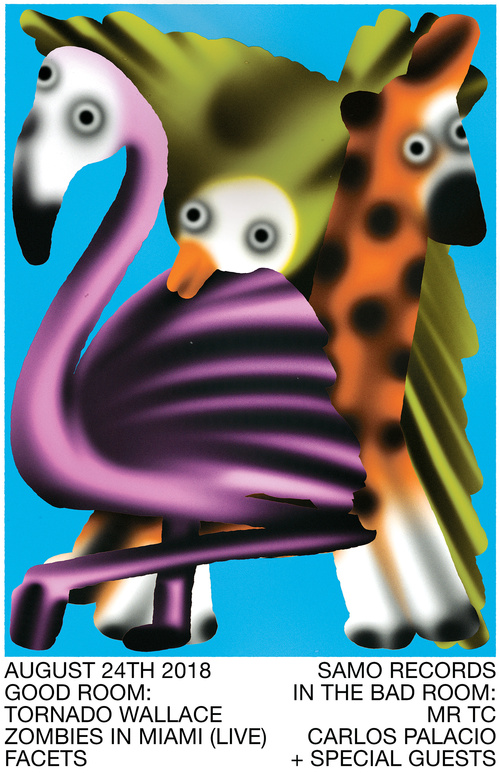
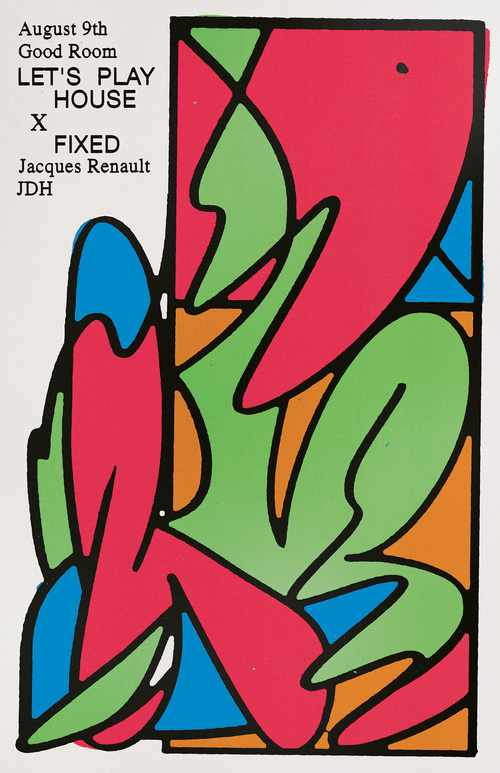

How did you first get into drawing and illustrating?
I think I was always into drawing, but I was honestly terrible at it. I tried to do graffiti, too, and was also really bad at it. I only starting making things I was happy with when my parents got me a computer. I was around 13 years old and I started doing fan sites for really cheesy bands I was into at the time. From there I downloaded Dreamweaver and Photoshop, and slowly started to design things without knowing what design was. When I got to college, I started drawing more, scanning the drawings and messing around with them in Photoshop. And that actually helped me develop my drawing skills on paper, which makes no sense but it’s true.
Before B.A.D. Studio, you worked at numerous design studios. What’s the biggest lesson that you learned from being in those more collaborative environments, and how did they inform your freelance practice?
Each place was completely different. I owe a lot to Pentagram because I learned all the rules, how to use a grid, and how to design things properly. They were also my visa sponsor and the reason why I moved to America, so it completely changed my life. After Pentagram I moved to Bloomberg Businessweek and all the beautiful things I learned how to do were smashed to pieces, set on fire, and thrown out of the window. Businessweek was definitely a very collaborative and experimental experience and I grew a lot with the other designers who were part of the team.
Most of what I do nowadays is a product of what I learned there, which is funny to say because it is a business magazine, although we had a lot of freedom to explore and try new things, design and illustration-wise. We had to produce a magazine every week and make it look different and exciting each time. We relied on humor a lot—if we could make everyone in the meeting room laugh with a sketch, then that was the way to go. That sort of attitude continued once I went solo. I do miss being in a room with other designers/creatives, but at the same time I love the freedom of being alone and doing whatever I want.
You started multi-purpose arts space SSHH in New York last year. What made you want to start a venue like this?
My boyfriend and I had been complaining about the lack of weird independent art spaces in New York, so instead of just complaining we decided to open our own. There are so many empty storefronts in the city nowadays and we were lucky enough to find a (really) small one with affordable rent. I work from there during the day, we have classes/workshops/events after 7 PM, and during the weekend it functions as a store with books, t-shirts, posters, prints, and weird things made by people/artists that live in the city. The workshops and classes hold a max of seven people and we try to make the tickets inexpensive, and pay everyone working with us fairly. We are still figuring out what the hell we are doing, but the experience has been really good and has made me more excited about being in NYC with a group of people that want to teach, learn, and do things in the city.
What advice do you have for young artists?
If you want to do something, don’t wait for someone to ask you to do it. Get off your phone and meet people. Get a full-time job you don’t hate, do your own art on the side, save money, and when you have enough saved invest it into creating something you like and believe in. Maybe it will work out, maybe it won’t. I have no idea what I’m doing either.